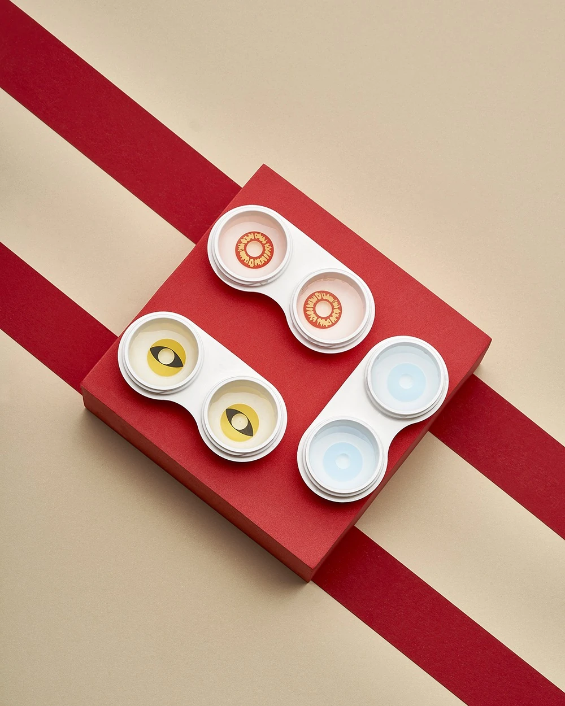
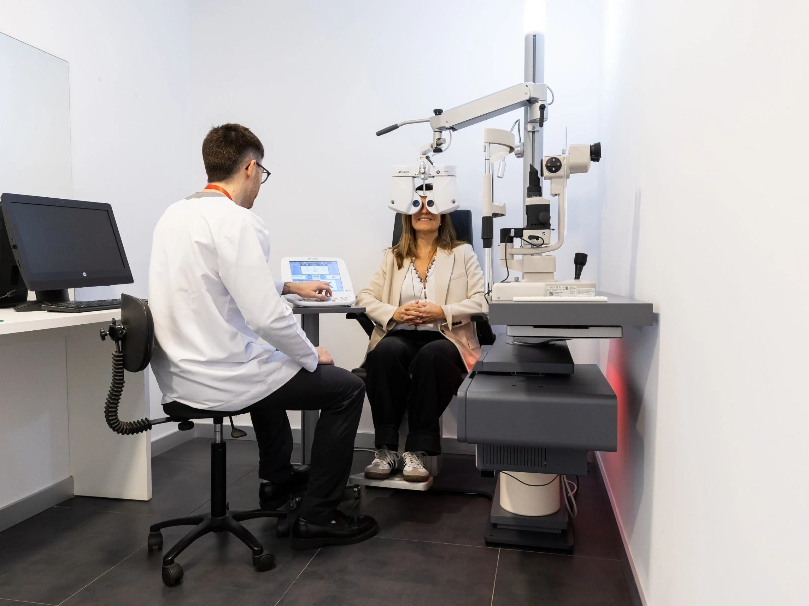
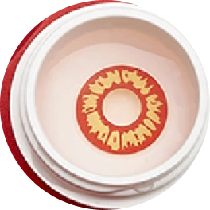
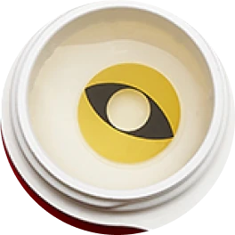
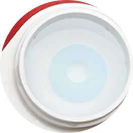
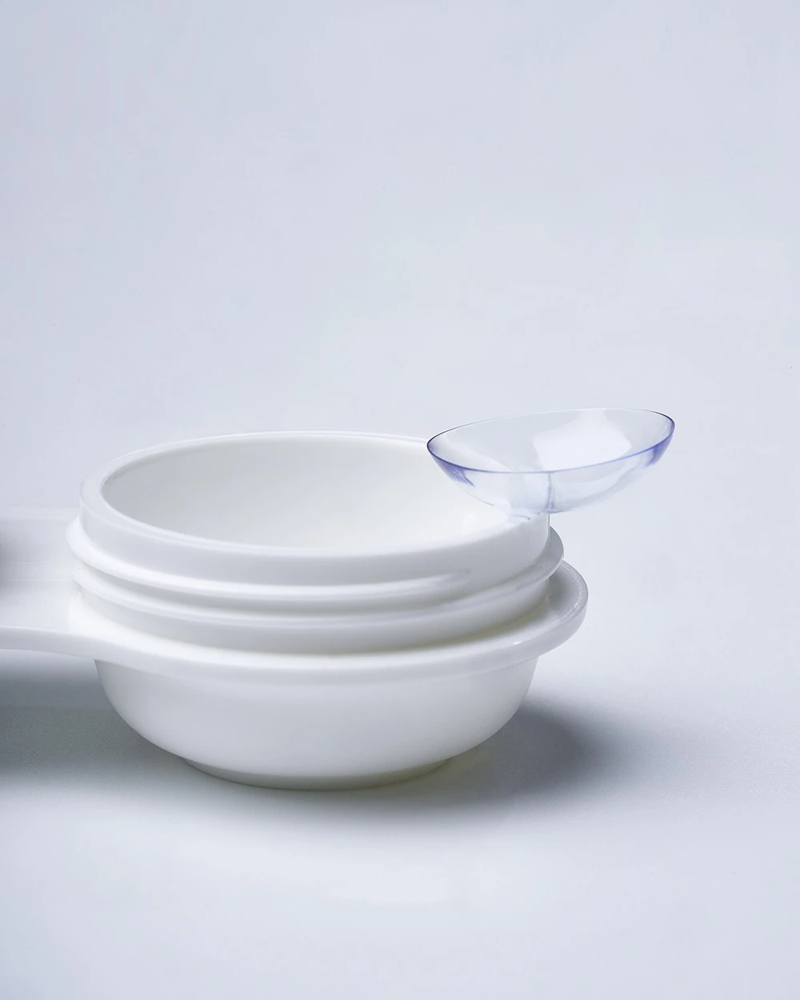
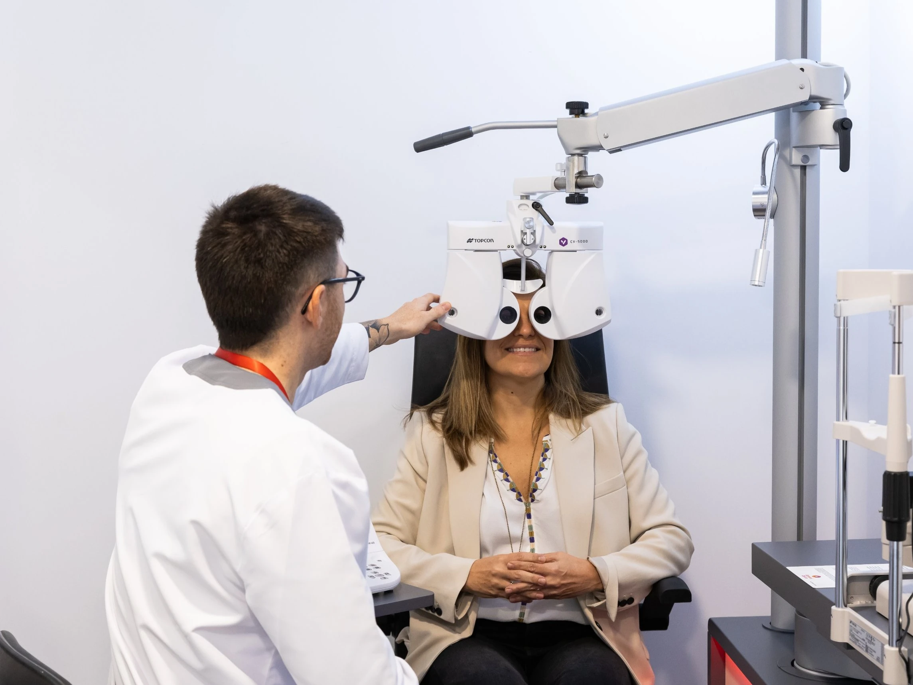
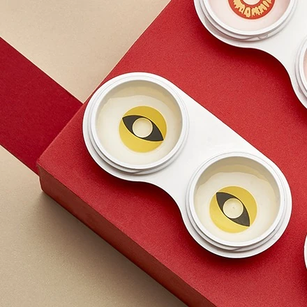

Ojos blancos, pupilas felinas, iris rojos... Unas lentillas de fantasía pueden ser un toque único en tu disfraz, pero siguen siendo un producto sanitario que se coloca sobre el ojo. Así que lo mejor es pedir una valoración profesional antes de disfrazar también tu mirada
En colaboración con General Optica

Ojo con los ojos
7 de cada 10
adolescentes que usan lentillas de fantasía las compraron sin una valoración profesional previa
La cifra da miedo en estas fechas, cuando muchas personas que nunca han llevado lentes de contacto deciden estrenarse con ellas para completar su disfraz.
Fuente: estudio científico con revisión por pares realizado en Texas (EE. UU.). Datos a los que ha tenido acceso General Optica.
Hazlo bien
Este Halloween, General Optica no dispensará lentillas de fantasía a quienes nunca han usado lentes de contacto sin una valoración previa. Quien quiera estrenarse con ellas deberá haber pasado antes por el gabinete de uno de sus ópticos-optometristas.

A quién afecta
A quien nunca ha usado lentes de contacto.
A quién no
Quien ya usa lentes de contacto, graduadas o cosméticas graduadas, puede seguir comprándolas con normalidad.
Qué incluye la visita
Revisión del estado del ojo, comprobación de que puede usar lentes de contacto con seguridad y explicación de cómo manipularlas, cuánto tiempo llevarlas y cómo cuidarlas.
«Queremos que la persona pueda disfrutar de las lentillas de fantasía, pero con las mismas garantías con las que utilizaría cualquier otra lente de contacto»
Miradas de miedo



Cada Halloween el nivel de detalle sube, y las lentillas de fantasía se han convertido en el recurso que remata un personaje con muy poco esfuerzo. Esa sencillez aparente es el problema, porque se compran y se usan como un complemento más. Y no lo son.

No solo estética
Las lentes de fantasía son productos sanitarios y tienen que cumplir garantías de calidad y seguridad. Que una lentilla no corrija la vista no la convierte en un producto cosmético. Por eso hay que hacerse tres preguntas: si la lente está homologada, si el ojo reúne las condiciones para llevar lentes de contacto y si podrá usarse de forma cómoda y segura.
«Una lente de fantasía puede parecer un accesorio puramente estético, pero sigue siendo una lente de contacto y requiere una valoración profesional previa»
A la hora de elegir unas lentillas de fantasía, es normal fijarse en el efecto estético que producen. Sin embargo, desde el punto de vista de la salud visual hay otras cuestiones bastante más importantes que debes plantearte:

No es lo mismo una óptica con garantías que una tienda de disfraces, un puesto ambulante o una web de productos de broma. En la óptica, las lentes cumplen las garantías de un producto sanitario y hay un óptico-optometrista que te asesora.
Antes de la primera vez, el óptico-optometrista evalúa tu salud ocular y estudia las características del ojo, incluida la córnea. Cada ojo es distinto, y lo que funciona en una persona puede no servir para otra.
Es lo que no sabe quien nunca ha llevado lentillas: cómo ponerlas y quitarlas, cuántas horas pueden llevarse, cómo limpiarlas y conservarlas y, cuando corresponda, cada cuánto hay que reemplazarlas.
En Halloween, las lentillas conviven con maquillaje, pestañas postizas y pigmentos muy cerca de los ojos. Estas son las pautas básicas, en el orden en que se usan.
El orden de la rutina importa tanto como el disfraz. Antes de pensar en sombras, pigmentos o pestañas postizas, ten en cuenta esto:
Las lentillas son un producto estrictamente individual y la fiesta no cambia eso:
Al final de la noche, el orden se invierte:
Alerta
Halloween es para pasarlo bien y las molestias en los ojos no forman parte del disfraz. Llevarlas solo unas horas no significa que no te pueda pasar nada. Si las lentillas pican, el ojo se enrojece o aparece una sensación de arenilla que no se va, lo adecuado es retirarlas y consultar con un especialista. Seguir con ellas puestas puede provocar diversas complicaciones:
«Una lente de contacto no debería provocar dolor, un enrojecimiento intenso ni alterar la visión»
Ojo con Halloween
Con la orientación adecuada, las lentillas de fantasía son lo que deberían ser, el detalle que completa el personaje del que te hayas disfrazado. El efecto puede ser muy chulo, de auténtica película de terror. Pero la experiencia de ponerse una lentilla en el ojo, mejor que no acabe dando miedo del malo.
